| 日付 | 2025年7月12日（土） |
|---|---|
| 山域 | 南アルプス |
| メンバー | 単独 |
| 山行形態 | 日帰り |
| アクセス | 車 |
| ルート (Map) | 雨乞岳登山口 (6:55) - (9:22) 水晶ナギ分岐 - (10:00) 雨乞岳 (10:17) - (10:37) 水晶ナギ分岐 - (10:47) 水晶ナギ (11:07) - (11:20) 水晶ナギ分岐 - (12:48) 雨乞岳登山口 |
南アルプス北部は日向山、入笠山、守屋山など人気の山が多いが、
その中で雨乞岳は非常に地味な存在だ。
さして展望の広がらなさそうな山なので、
さして晴れそうにない一日に登ってみることにする。
雨乞岳登山口の駐車場に到着。標高770m。
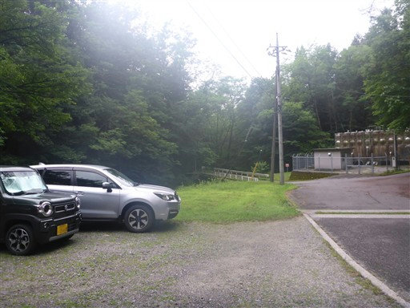
車道を少し歩くと登山口に到着する。
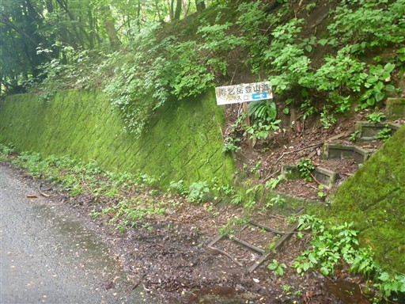
樹林帯の中の緩やかな傾斜の登山道。
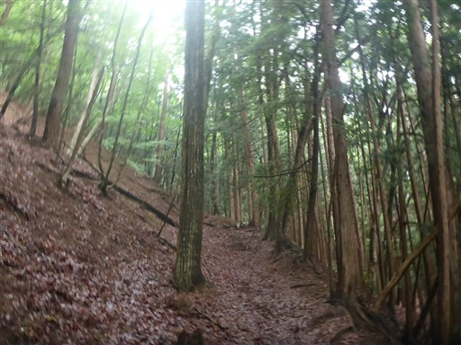
山を左から回り込んで尾根に乗る。
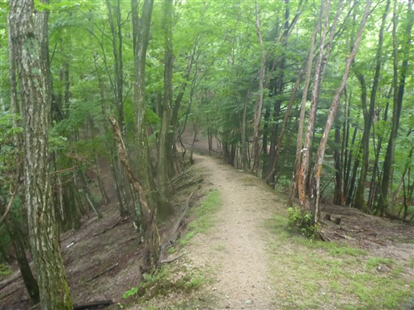
標高1000mを超える前から登山道は雲に覆われてしまう。
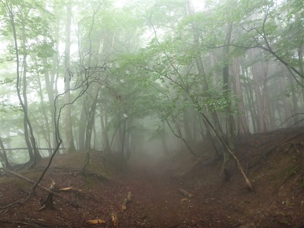
代り映えのしない登山道が続いていたが、丸山に着いた辺りで傾斜が緩み、
周囲が笹原になる。
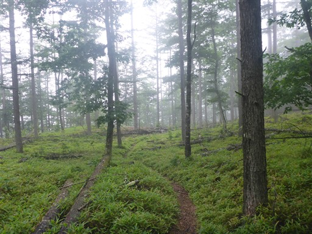
ちょっとだけ痩せ尾根。
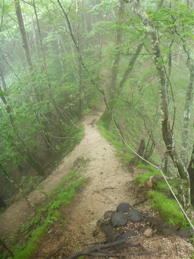
急斜面でロープが出てくるが、ロープに頼るほどの場所でもない。
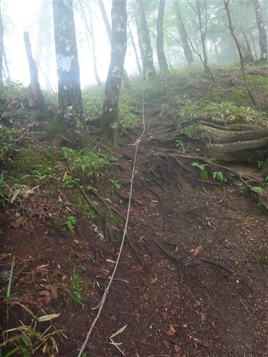
水晶ナギと雨乞岳との分岐点。先に雨乞岳に向かうことにする。
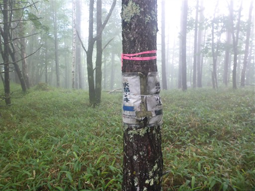
少し青空が出てくる。先に水晶ナギに向かった方が良かったか？
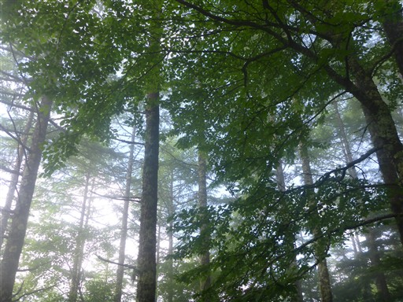
山頂直下は標高差にして200mほど急斜面が続く。

斜面にマルバダケブキが広がっている。
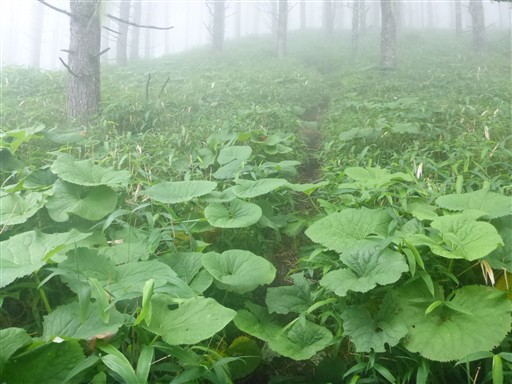
周囲はサルオガセの森だ。
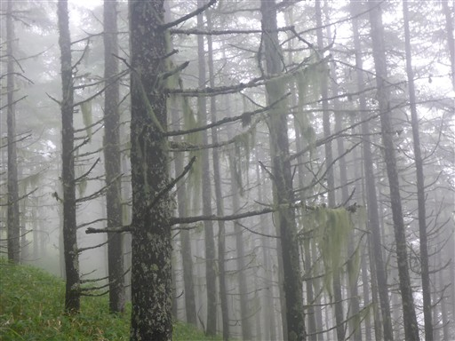
立派なサルオガセ。木に藻のようなものが引っかかっているのは不思議な光景だ。
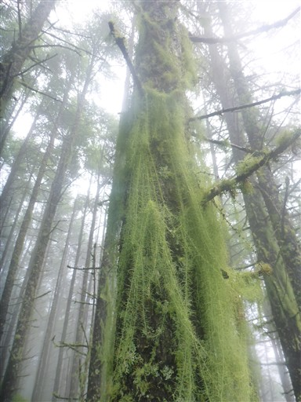
山頂が見えてきた。
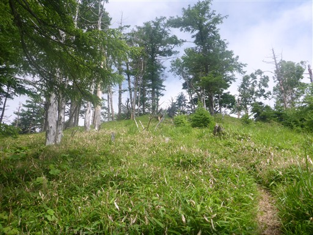
雨乞岳に到着。標高2037m。
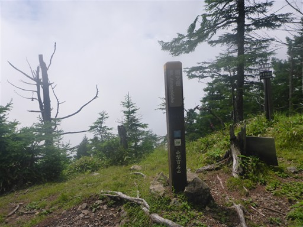
少しだけ青空が見えるが、雲に覆われて展望は全くない。
いくらか木がない場所があるので、晴れていれば少し展望が広がるのかもしれない。
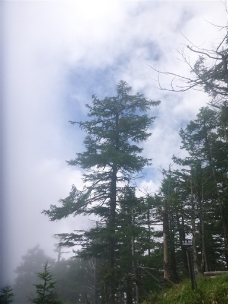
ザックに見慣れない赤い虫が引っ付いている。
なかなか離れないが、何者だろう？
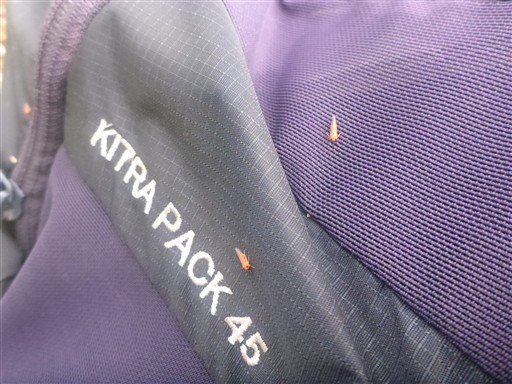
分岐点に戻ってきたら、次は水晶ナギに向かう。
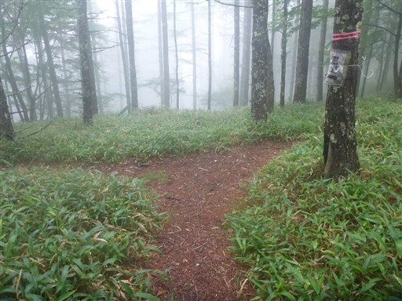
ザレた斜面。水晶ナギはもう少し先のようだ。
雲に覆われて展望は全く広がらない。
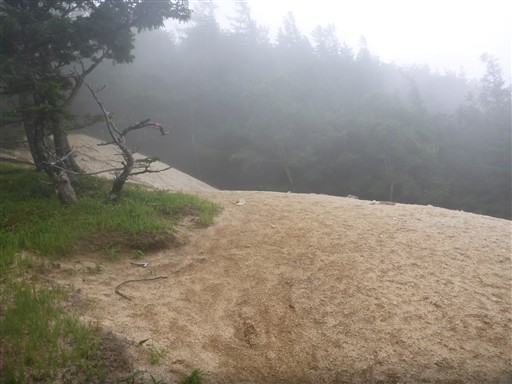
登山道は再び樹林帯の中に。
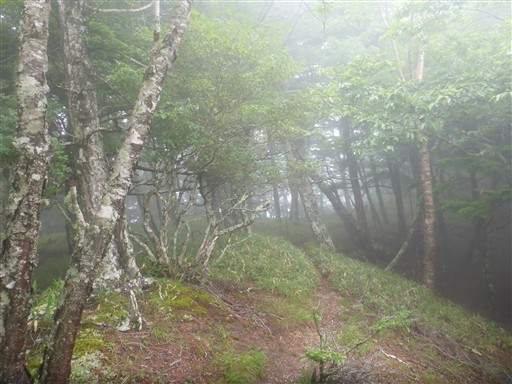
水晶ナギが見えてきた。
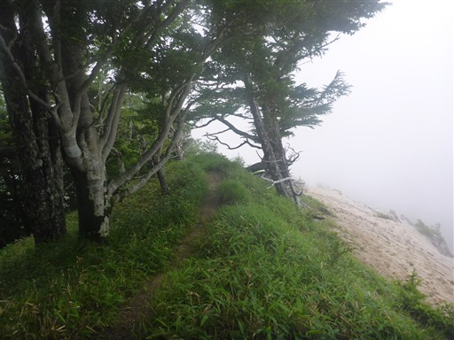
水晶ナギに到着。ここも雲に覆われて何も見えない。
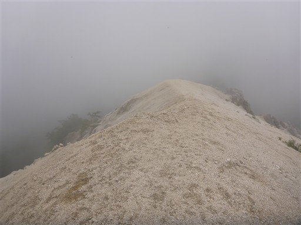
大きな岩があったので、その上に腰かけて昼食休憩をとる。
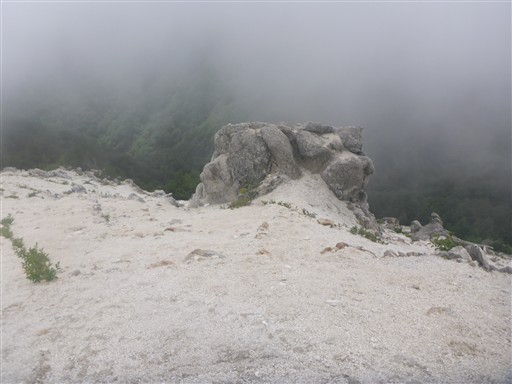
砂の斜面を見上げる。
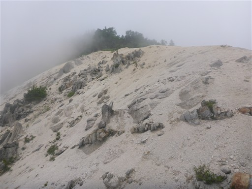
しばらく待つと少し視界が広がる。
この場所だけ白い砂場が広がっているのは不思議だ。地質の影響だろうか？
草が線状に生えているのもなぜだろう？
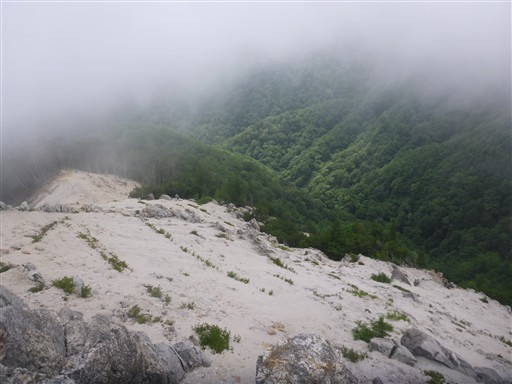
反対側の景色。
晴れていてもさほど展望の広がる場所ではないのかもしれない。
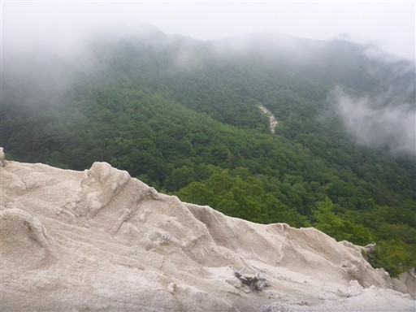
水晶ナギを後にする。ここがちょうど草と砂の境界線だ。
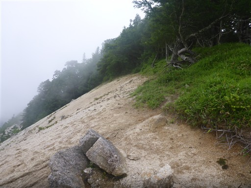
砂が流れて木の根が露出している。この木もそのうち倒れてしまうのかもしれない。
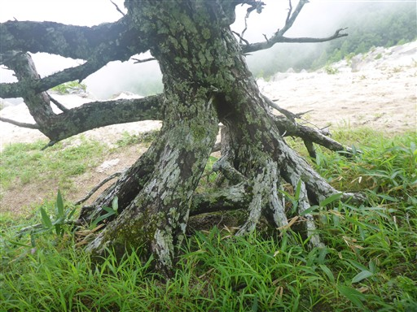
水晶ナギの手前にあったザレも雲が消えて少し視界が広がっている。
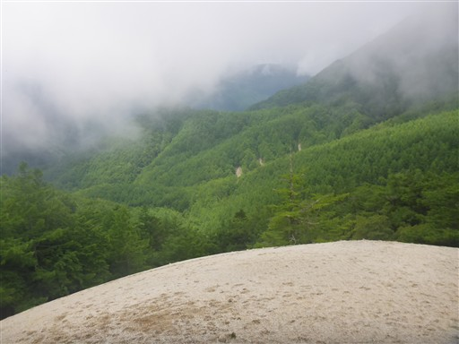
あとはひたすら下山するのみ。下山中に自転車2人組が休んでいるところとすれ違う。
確かに一定の傾斜が延々と続くこの登山道は自転車に最適だ。
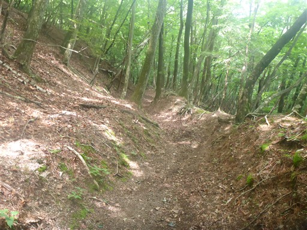
下山後、駐車場横にある石尊神社に立ち寄る。
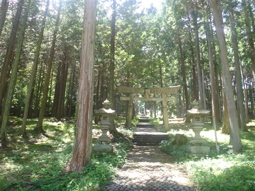
この神社は杉並木ではなくアカマツが立ち並ぶ珍しい神社だ。
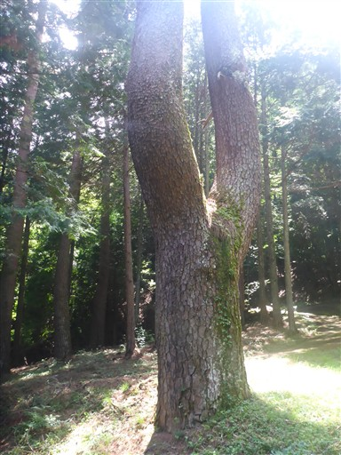
暑い中、階段の登りがある。思ったよりも本殿が遠い。
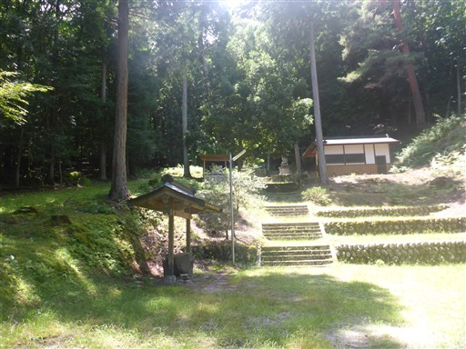
そのあとに現れる聳え立つ階段。こ、これは誤算。
こんなに登る羽目になるとは…
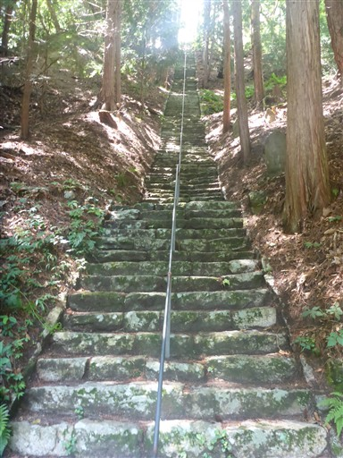
階段を登った先にある石尊神社。1398年創建と書かれている。
本殿の裏側を見てみたが、雨乞岳の登山道とは通じていないようだ。
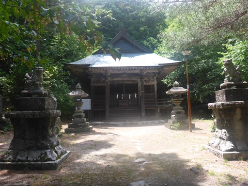
本殿の横には石像が立っている。
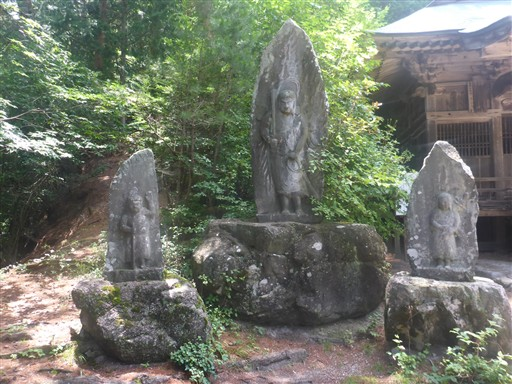
神社でまれに見かけるこの物体、調べてみると砲弾のようで
戦勝記念などで奉納されたもののようだ。
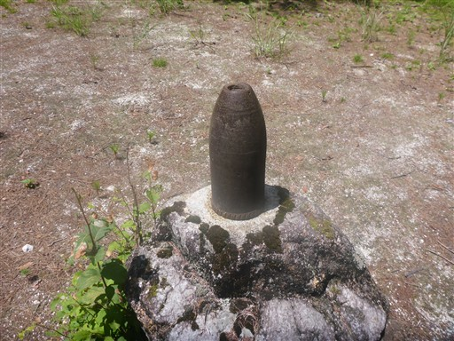
かなりの急傾斜、かつ石段の幅が足の長さより狭いので
転げ落ちないように慎重に下る。
雨乞岳は全く変わり映えのしない登山道が延々と続き何の特徴もない山だった。
ただ、水晶ナギだけは明るく開けていてよい場所だった。
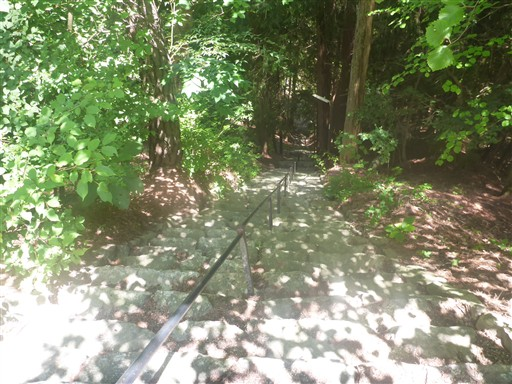